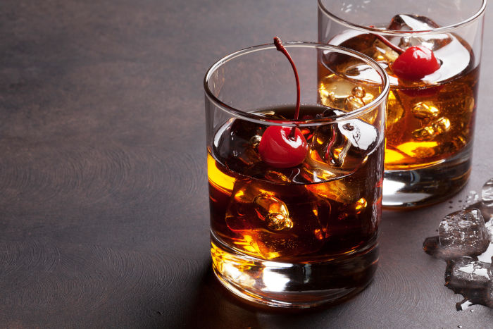

La versatilité de notre produit n’a d’égal que la satisfaction de le déguster dans sa plus grande pureté. Laissez libre court à votre imagination et découvrez un monde de possibilités infinies.
Vous êtes barman, mixologue, grand connaisseur de cocktails, voici un conseil pour vous : Laissez votre passion vous inspirer et ajoutez une touche personnelle à vos créations. Vos clients en redemanderont et surtout, ils reviendront.
Devenez créateur de moments inoubliables pour vos clients.
Ingrédients
Per cocktail
- 45 ml (1 1/2 oz.) SAP56
- 20 ml (3/4 oz.) de vermouth rouge
- 1 goutte de bitter Angostura
- 1 cerise au marasquin
- 5 or 6 glaçons
Préparation
Mélanger
SAP56, le vermouth rouge et les bitters Angostura dans un verre à mélange contenant les glaçons. Remuer à l'aide d'une cuillère à mélange pendant 8 à 10 secondes. Garnir d'une cerise au marasquin.

Ingrédients
Per cocktail
- 2 oz de SAP56
- 1 oz jus de citron
- 1oz sirop simple ou sirop d’érable
- 200 ml de bière de gingembre
- 1 branche de romarin en déco
Préparation
Dans un verre avec de la glace, incorporer tous les ingrédients et agiter pour bien mélanger.
Vous pouvez ajouter une branche de romarin en déco.
Credit @Prive LC
Ingrédients
Per cocktail
- 2 oz de SAP56
- 3-5 gouttes Franks Red Hot ou
- Tabasco au goût
- 4-5 gouttes de Worcester
- 2 goutes de meskit (fumé liquide)
- 150ml bière noire
- 150ml Clamato
Préparation
Frotter l'ouverture d'un long verre avec un quartier de lime. Tremper dans le sel de céleri. Ajouter de la glace.
Ajouter tous les ingrédients et bien mélanger.
Credit @Prive LC
Ingrédients
Per cocktail
- 2 oz de SAP56
- 1 blanc d'œuf
- 1oz de citron
- 1oz sirop d'érable
- 1 pincée de poivre de Cayenne.
Préparation
Dans un shaker, mélanger tous les ingrédients sauf le poivre de cayenne. Agiter vivement de 8 à 10 secondes.
Verser dans un verre. Ajouter une pincée de proivre de Cayenne.
Credit @Prive LC
Ingrédients
Per cocktail
- 1/2 oz jus de citron
- 1 1/2 oz de SAP56
- 1/2 oz de triple sec
- 200 ml de Soda amer aux citrons
- 1 rondelle de citron et demi Rim de sucre
Préparation
Frotter l’ouverture d’un long verre avec un quartier de lime. Tremper dans le sucre. Dans un verre un highball avec glaçons, ajouter tous les ingrédients et mélanger.
Credit @pubsaintpierre
Ingrédients
Per cocktail
- 2oz de SAP56
- 3/4 oz de citron
- 300ml Cidre
- 2-3 gouttes de sirop d’érable
Préparation
Dans un shaker avec de la glace, ajouter tous les ingrédients. Agiter vigoureuse ment pendant 8-10 secondes. Servir sans glace dans un verre old-fashioned.
Credit @pubsaintpierre
Ingrédients
Per cocktail
- 2oz de SAP56
- 1/2 oz Chartreuse
- 3/4 oz Jus de lime
- 1/2 oz Sirop d'érable
- 3-4 Gouttes Angostura amer
- Soda Amer au Citron The Great Jamaican
Préparation
Dans un shaker avec de la glace, mettre tous les ingrédients sauf le Soda Amer au Citron. Bien agiter. Verser le tout avec la glace dans un verre old-fashioned. Remplir le verre avec du Soda Amer au Citron. Ajouter 3 ou 4 gouttes de bitters Angostura.
Nous tenons à remercier nos maitres mixologues et barmans de renoms pour avoir créé des cocktails d’exceptions. C’est grâce à votre dévouement à l’excellence et votre insatiable créativité que vous arrivez à créer des expériences inégalées.